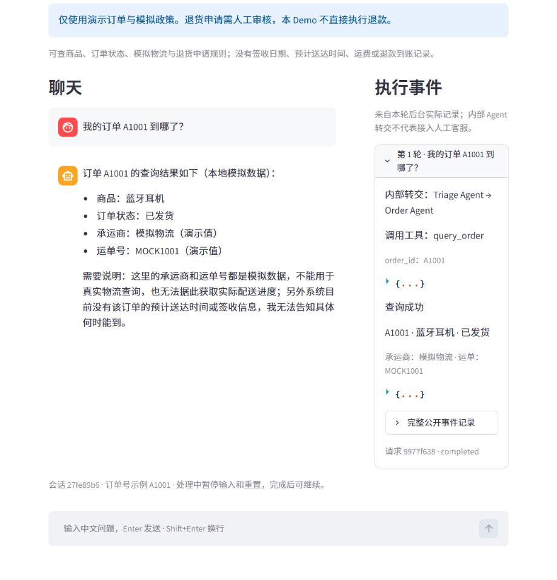
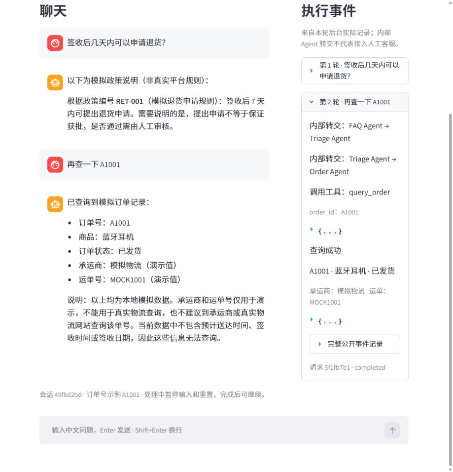

“我的订单 A1001 到哪了？”
查询本次模拟记录，回答商品、状态和已有物流字段；没有到货时间就明确说明。
查询演示订单，或了解模拟退货申请规则。
开始新会话后，当前聊天将从页面清除，后台上下文也会重建；已有运行记录仍保留。
点击填入，发送后执行查询；本设计稿仅查看预设样例。
模拟订单与政策 · 不直接执行退款
原型只演示点击发送；正式应用沿用原生输入与换行。
页面管理交互，会话保留上下文，Runner 串联模型与本地工具。
把“订单到哪了、如何申请退货”两类问题，拆成可查询、可追问、可核对的流程。基于 OpenAI Agents SDK 与 DeepSeek，在 Codex 协助下完成模拟售后 Demo。
订单与政策查询、多轮补充、角色交接、新会话和实际事件查看。
业务能力已在本机验证；当前页面仍是新版界面设计预览。
固定样本开发 15/15、留出第2轮重测 10/10；首轮中断记录保留。使用模拟订单与政策，不执行真实退款。
后台冻结版本4f49d09；不作为任意问题准确率或生产效果承诺。
查询本次模拟记录，回答商品、状态和已有物流字段；没有到货时间就明确说明。
查政策后标明RET-001：7天内可提出申请，是否通过需人工审核。
缺编号先追问，补充后在同一会话继续查询，避免猜订单或丢失前文。
以下是2026-10-14本机真实运行的历史截图；保留旧版界面，用于说明已有业务链路。本设计稿的交互仍为预设样例。

A1001 → query_order → 蓝牙耳机、已发货、模拟运单。未知的到货时间没有补造。
历史本机运行截图 · 点击查看大图
先问退货，再查订单。FAQ → Triage → Order，切换职责后继续使用相应查询工具。
历史本机运行截图 · 点击查看大图Triage识别任务；订单与政策专员按职责接手。
Runner执行handoff或Python工具，模型提出动作。
工具读取本地JSON，返回本次事实和结果状态。
模型组织答复，页面展示实际事件，等待下一题。
同一冻结后台版本的最终开发轮。
首轮保存中断后，完整第2轮重测。
订单、政策转订单、多轮、重置、查无记录。
后台结果对应4f49d09；页面关键复查来自此前交付记录，版本单独归档。固定样本划分公开可见，不是首次外部盲评，也不代表新版UI或云端已验收。
项目中曾出现模型只口头表示转接、没有完成期望工具动作的情况。调整Triage工具选择配置后，复查真实handoff和最终答复，避免只看文字判断成功。
留出首轮因Windows文件保存异常中断。保留首轮记录，增加有界磁盘重试；修复后回归并完整重测，不把重测包装成首次通过。
接入DeepSeek，运行航空客服基线，理解Agent、工具与交接。
加入模拟订单、政策工具、多轮补充与边界案例。
完成后台评测和已有本机页面复查，准备架构图及新版界面设计。
需求审阅，模拟规则、功能范围与验收目标确认，本机运行配合和结果审阅。
Codex协助代码、排错、验证与文档；OpenAI Agents SDK提供执行机制，DeepSeek提供模型服务。
本机业务可运行；新版工作台待接入真实后台，公网访问与录屏待完成。没有真实退款、工单、真人接入或真实商家接口。个人独立实现与掌握程度按实际经历说明。